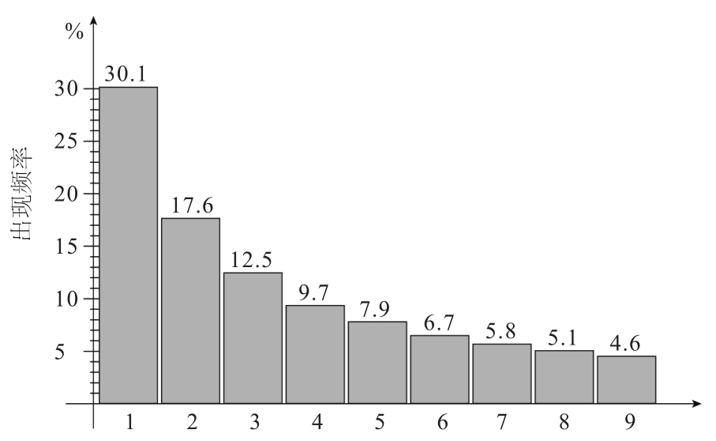

偷税者通常都自以为很聪明，他们经常在税款申报单上隐藏高达百万元的盈利额，同时认为税务部门的工作人员智力低下，无法识破自己伪造的税单。曾经轰动一时的乌利·赫内斯（Uli Hoeneß）偷税丑闻(1)就是一个很好的例子。他们凭着“高人一等”的想法，在税单上捣鬼，篡改税款，以此来蒙骗税务局的工作人员，但这也让他们的税单错漏百出。本文讲述的数学技巧可以让看起来很愚蠢的税务部门的工作人员变得机智灵敏，因为税款单上的数字非常符合这一分布规律，税务调查员可以利用这一规律来检查税单，一旦有与这一规律不相符的地方，就会立刻起疑心，从而发现税单中的伪造信息。
让我细细道来。
世界上小的东西很多，大的东西相对较少。在数字的世界里也是如此，人们通常对于以小的数字开头的数比较偏爱。任何一个数都可以写成一个1~10的值M与10的n次幂相乘，比如，310就可以写成3.1×102。但奇怪的是，自然界中大多数数的M值都小于4，换句话说，世界上的数多以1、2或3开头。

自然界中的数的首位数字(2)
大家可以自己验证一下这一点。你会发现，当你翻开一份报纸或者打开网页浏览文章时，出现的数或者数词大多都是以较小的数字开头的。更确切地说，许多数据的开头数字——无论是居民人口还是自然常数，无论是新闻中的数据还是混杂在一起的随机数值——都遵循着“本福特分布”，即“本福特法则”(3)。
这个图显示，由“1”开头的数比由“9”开头的数的6倍还多。大部分人都会对这个结果感到十分吃惊。人们想不明白，为什么比起9362这种数，我们的自然界会更喜欢1362，而它们明明只相差一个数字。如果你在谷歌中搜索这两个数，会发现搜索结果大不相同，包含1362的条目要比包含9362的条目多得多。这也从一方面验证了本福特分布。
那么，本福特分布是如何出现的呢？
如果本福特分布是个普适性的分布法则，那么数的单位——无论是摄氏温度还是华氏温度、千米还是英里、欧元还是美元，都并不会影响这个法则的正确性。数学家把这种特性称为“尺度不变性”(4)，即指这个法则必须适应所有的计量单位，必须普遍正确。
尺度不变性还意味着数的M值在每一个间隔为1的区间内也遵循着本福特分布，这种分布特性最终导致了首位数字的分布不均匀。借助股市价格会让人们更好理解这个分布。当股票价格从100上涨到200的时候，股价上涨了100个百分点。但同样上涨100，当股票价格从900上涨到1000的时候，只增长了11个百分点(5)。这表明了从100上涨到200比从900上涨到1000要难得多。在同样的增长量下，价格停留在首位数字为“1”的时间比停留在首位数字为“9”的时间长。这就意味着，在股票市场中，以“1”开头的数比以“9”开头的数出现得更加频繁。
本福特分布适用于绝大多数的财政数据检验——真实的、无伪造的、干净的财政数据一定会符合本福特分布，被人工处理过的数据则与此数据分布情况截然不同。
美国统计学家、会计学教授马克·尼格里尼（Mark Nigrini）研究了美国各大银行录入税务系统中的利息收入，发现其数据分布状况完全验证了本福特分布的正确性，但是偷税者呈交的税款申报单中的数据分布情况却与之大相径庭。
尼格里尼开发了一个软件，供政府机关与科学研究者甄别造假的税款申报单或者伪造的资产负债表。这款软件已经在多个国家投入使用。他曾利用该软件检测已确认为伪造的税单，结果没有一份申报表得以通过“本福特分布测试”。
想要伪造数据之后使数据仍符合本福特分布是非常困难的，因为在自然出现的数中，首位数字和末位数字都有特有的分布，任何更改都会引人注目。如果12432欧元的实际盈利被篡改为9921欧元，尽管区别很小，但是这几个数字的出现却打乱了原来数据分布的结构，并且这里还出现了显眼的数字“9”，它对整个数据的分布影响巨大，因为数字“9”的出现会使整个数据破绽百出。切记：你是骗不过统计学大师的！
虽然经“本福特分布测试”检验出的伪造税单并不能成为法庭上有力的证据，但它可以督促税务人员更仔细地检查税务表，勒令报税者递交税务材料，核实税务登记或是进行税务审计。如果还有谁认为税务部门太过愚蠢，揭发不了偷税者，那他可大错特错了。
(1) 2013年4月，乌利·赫内斯（拜仁慕尼黑球队主席）称自己于1月自主在瑞士设立了避税账户，该事件曾经震惊德国。
(2) 图表中横轴表示自然界中的数的首位数字，竖轴表示该类数出现的频率。如第三列代表自然界中以3为首的数占所有数的12.5%。
(3) 本福特法则（Benford’s law），指在实际生活中得到的数据中，以1为首位数字的数占的比重最大，而以其他数字为首位数字的比重分布情况如上页图表所示。
(4) 也称为“自相似性”。
(5) 上涨数量除以原数量，即100÷900≈11%。